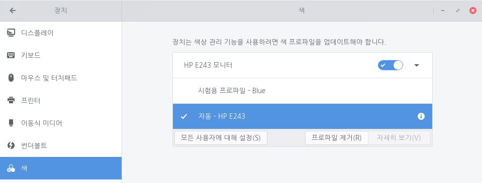

파일 브라우저에서 .ICC 또는 .ICM 파일을 두 번 클릭하여 색 프로파일을 가져올 수 있습니다. 사용자 색 프로파일은 [색] 패널에서 관리할 수 있습니다. 다음 단계를 수행하여 사용자 색 프로파일을 관리할 수 있습니다.1. 왼쪽 하단의 [시작]아이콘을 클릭하고 검색 창에 '설정'을 입력한 후 [설정] 애플리케이션을 실행합니다.
 2. [설정] 애플리케이션 사이드 바에서 [장치]를 클릭한 후 [색]을 클릭합니다.
2. [설정] 애플리케이션 사이드 바에서 [장치]를 클릭한 후 [색]을 클릭합니다.
3. [프로파일 추가]를 클릭하여 기존 프로파일을 선택하거나 새 프로파일을 불러옵니다.디스플레이 제조사에서는 사용자가 기본적으로 사용할 수 있는 프로파일을 제공합니다. 하지만 이러한 프로파일은 일반적인 디스플레이에 적합하도록 제작되어 특정 디스플레이에 완벽하게 적용되지 않을 수 있습니다.